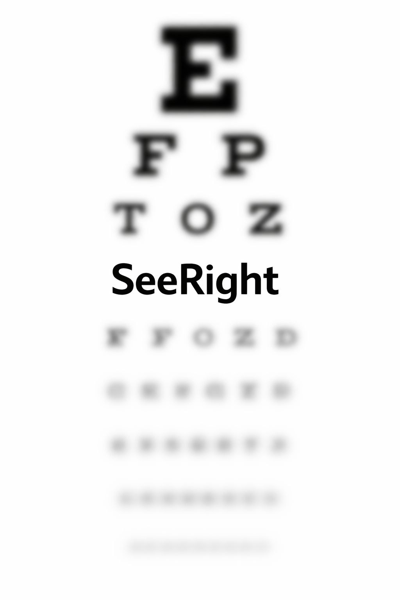

SeeRight
Join the movement on vision correction. Runs locally in your browser. No login. No uploads.
Apply
Before / After

Did this improve clarity?
Yes
No
Get early access
Join the early release list. No spam. You’ll be first when Android builds drop.
Join Early Access